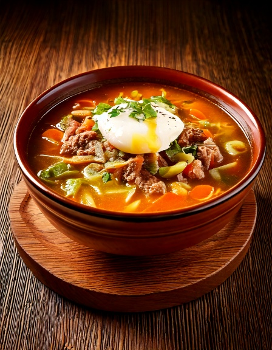

Una reconfortante sopa de carne y fideos con un toque de leche y orégano -- la verdadera calidez de la sopa criolla, hecha con fideos integrales y verduras extra para que sea más suave con la glucémia.
Información Nutricional (por porción)
Por qué encaja en una dieta apta para diabéticos
La sopa a la criolla tradicionalmente usa una porción generosa de fideos de trigo comunes, que se digieren rápido en un caldo caliente. Reemplazarlos por fideos integrales, usar una porción más pequeña de fideos y aumentar el plato con verduras extra ralentiza la digestión y agrega fibra, mientras que la leche y el orégano mantienen el mismo sabor reconfortante y familiar.
Ingredientes
- 1/2 lb225 g carne molida magra
- 6 oz170 g espagueti integral, quebrado en trozos
- 11 cebolla, picada
- 22 tomates, en cubos
- 1 cup150 g verduras mixtas (zanahoria, arvejas), en cubos
- 1/2 cup120 ml leche descremada
- 11 huevo, escalfado, para servir (opcional)
- 1 tsp1 tsp orégano seco
- 5 cups1.2 L caldo de carne bajo en sodio
Instrucciones
- Dora la carne molida con la cebolla en una olla grande a fuego medio, unos 6 minutos.
- Agrega los tomates, el orégano y el caldo, y lleva a hervor.
- Agrega las verduras mixtas y el espagueti quebrado, y cocina a fuego lento 12-15 minutos hasta que la pasta esté tierna.
- Incorpora la leche y calienta sin dejar hervir.
- Sirve en platos hondos y corona cada uno con un huevo escalfado si lo deseas.
Esta es una de las recetas reales de cocina Peruana de GlucoBeacon, parte de una creciente colección de recetas regionales creada para una planificación real de comidas aptas para diabéticos. Descarga GlucoBeacon en Google Play →